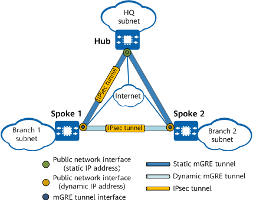

Understanding DSVPN over IPsec
Data transmitted between the hub and spokes, as well as between spokes, needs to be encrypted to increase data security. To meet this requirement, during DSVPN deployment, an IPsec profile can be bound to DSVPN so that mGRE and IPsec tunnels are dynamically established between spokes.
- The establishment of an mGRE tunnel immediately triggers that of an IPsec tunnel.
- Typical IPsec technology uses Access Control Lists (ACLs) to identify unicast traffic to be encrypted. An IPsec policy requires a large number of ACLs to be defined, which is difficult to implement. DSVPN combines NHRP and mGRE with IPsec to provide ease of device configurations, while ensuring data transmission security and facilitating network deployment.
- Because IPsec tunnels are dynamically established between spokes, IPsec data exchanged between spokes does not need to be decrypted or encrypted by the hub. This minimizes data transmission delay.
Figure 1 DSVPN over IPsec

On a DSVPN network, IPsec profiles are configured on the mGRE interfaces of the hub and spokes. DSVPN over IPsec works as follows:
- All spokes on the network send NHRP Registration Request messages to the hub and report NHRP peer information to IPsec. The Internet Key Exchange (IKE) modules of the spokes and hub negotiate IPsec tunnel parameters with their peer ends.
- Based on the registration requests received, the hub generates NHRP mapping entries to record the mapping between the tunnel addresses and public addresses of the spokes. Following this, it sends registration replies to the spokes.
- Spokes establish an mGRE tunnel when they need to transmit traffic. For details about how they set up an mGRE tunnel, see DSVPN Fundamentals in a Non-Shortcut Scenario and DSVPN Fundamentals in a Shortcut Scenario.
- When spokes establish an mGRE tunnel, their IPsec module obtains NHRP peer information, adds or deletes IPsec peers based on the information, and triggers dynamic establishment of an IPsec tunnel.
- When one spoke wants to send an IP packet to another spoke with which it has set up an IPsec tunnel, the source spoke looks for a matching route based on the packet's destination address. If the outbound interface of the matching route is an mGRE interface, the source spoke searches the NHRP mapping table for the public address of the route's next hop, and then searches for a matching IPsec security association (SA) to encrypt the packet.
In a DSVPN over IPsec scenario, if a NAT device is deployed, you are advised to set the IPsec encapsulation mode to transport. If two spokes are situated behind different NAT devices or the hub is situated behind a NAT device, the IPsec encapsulation mode can only be transport.